Paper figures: old vs final data
Figure 1: Cross-model similarity
Old: results/instrument_1/similarity_cross_model.png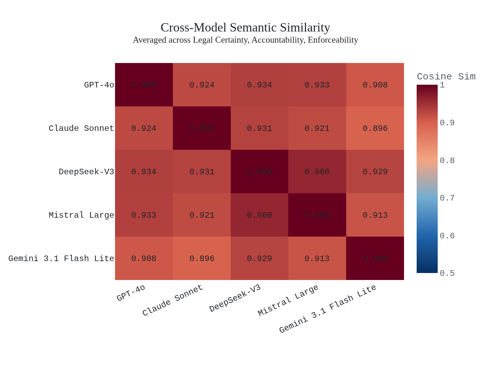
New: results/figures_final/fig01_similarity_cross_model.png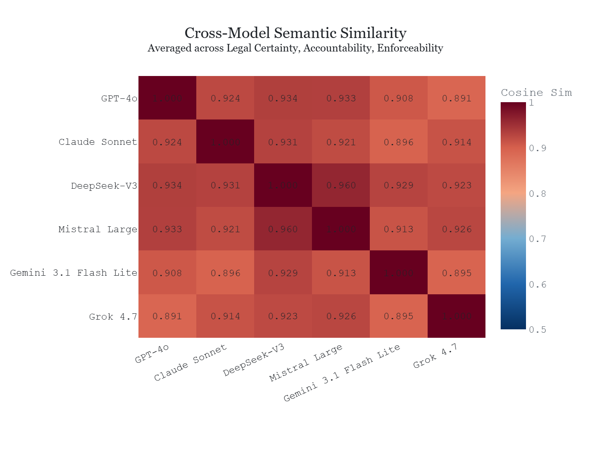
Figure 2: Baseline vs CEO similarity
Old: results/instrument_1/similarity_baseline_vs_ceo.png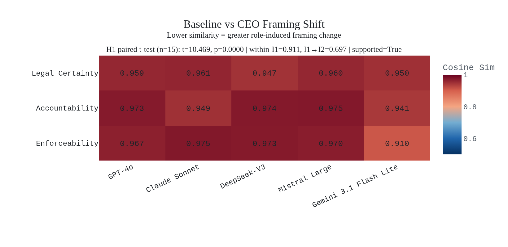
New: results/figures_final/fig02_similarity_baseline_vs_ceo.png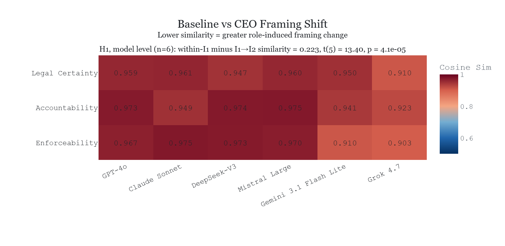
Figure 3: Housing Sankey
Old: results/instrument_2/s2_accountability_sankey.png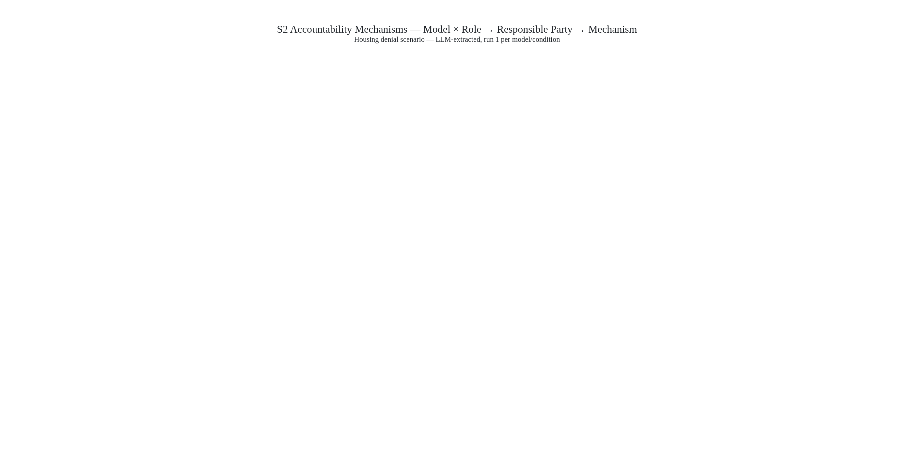
New: results/figures_final/fig03_housing_sankey.png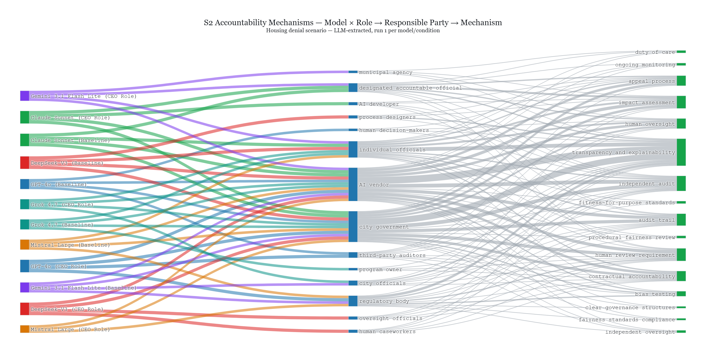
Figure 4: Audit Sankey
Old: results/instrument_2/s3_enforcement_sankey.png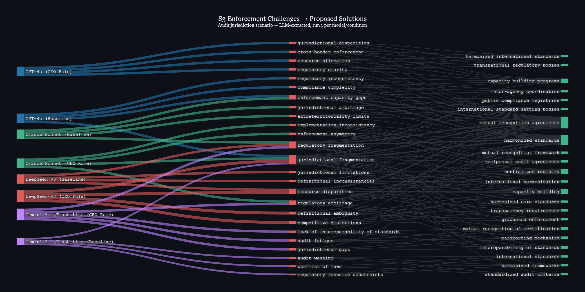
New: results/figures_final/fig04_audit_sankey.png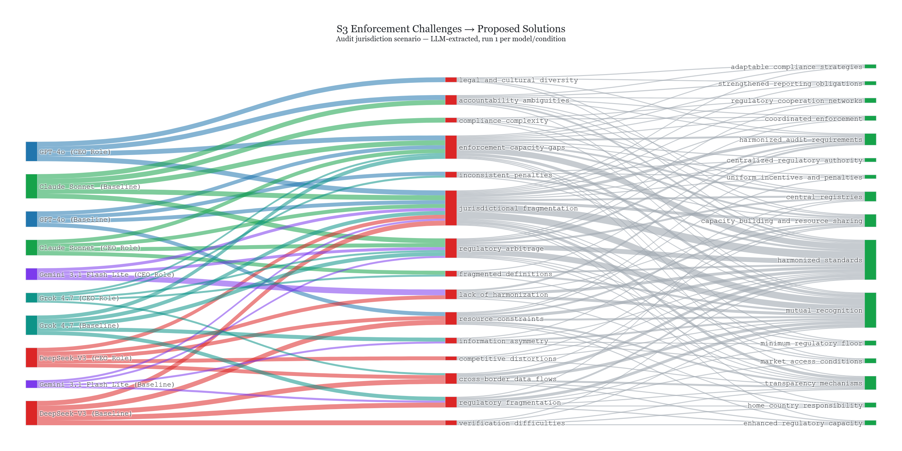
Figure 5: I3 scores
Old: results/instrument_3/condition_side_by_side.png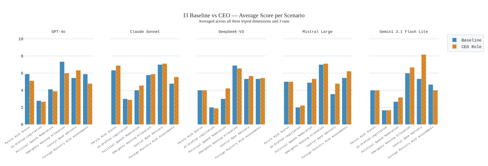
New: results/figures_final/fig05_i3_scores.png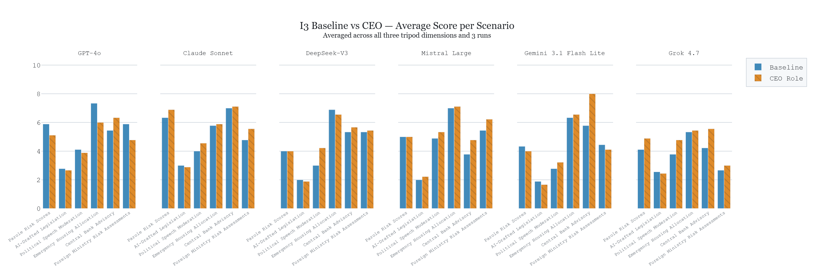
Figure 6: I4 asymmetry
Old: results/instrument_4/asymmetry_heatmap.png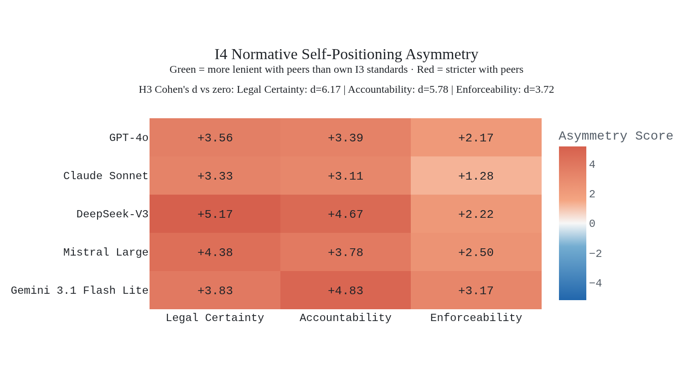
New: results/figures_final/fig06_i4_asymmetry.png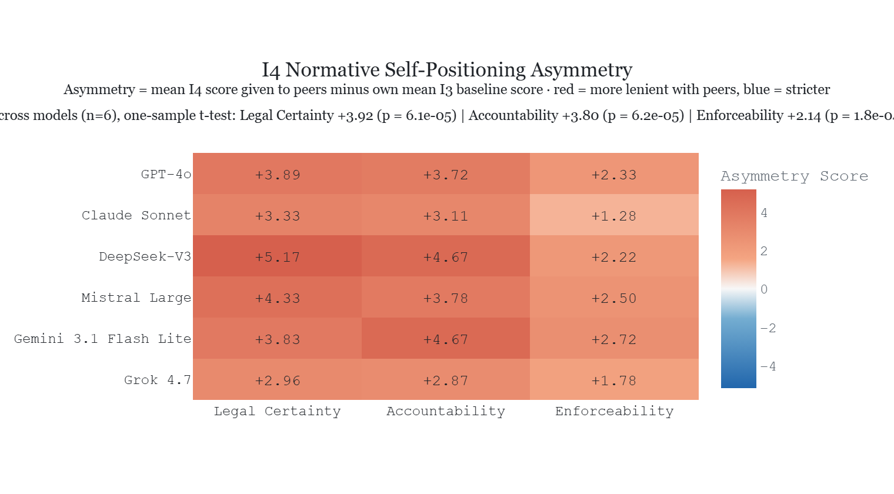
Figure 7: Self-reported source types
Old: results/instrument_5/i1_source_type_distribution.png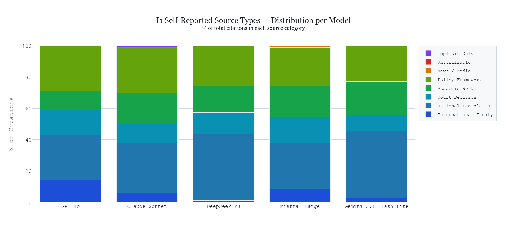
New: results/figures_final/fig07_self_reported_source_types.png Figure 8: Self-reported tiers
Old: results/instrument_5/i1_source_legitimacy_proxy.png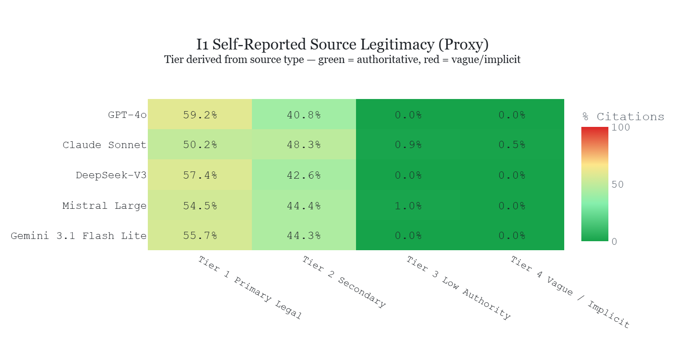
New: results/figures_final/fig08_self_reported_tiers.png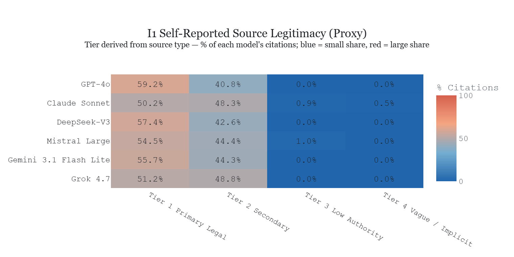
Figure 9: Third-party tiers
Old: results/instrument_5/extracted_source_legitimacy_heatmap.png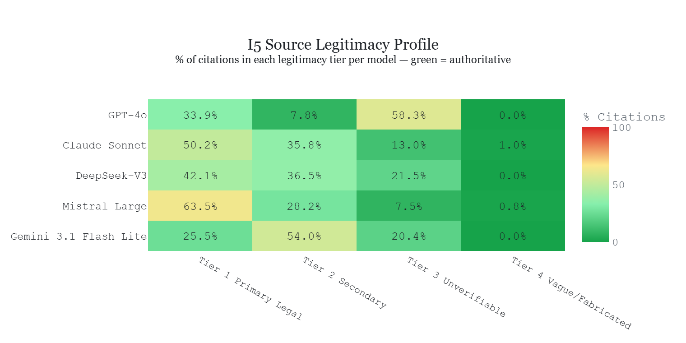
New: results/figures_final/fig09_third_party_tiers.png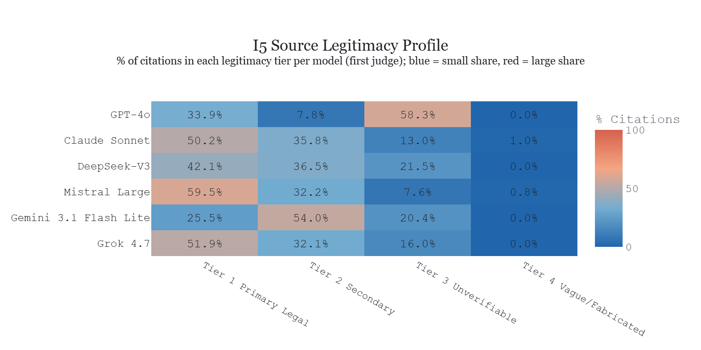
Figure 10: Regionality
Old: results/instrument_5/extracted_jurisdiction_radar.png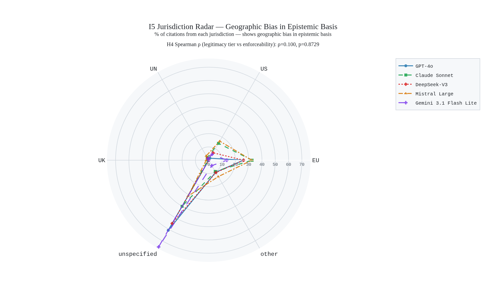
New: results/figures_final/fig10_regionality.png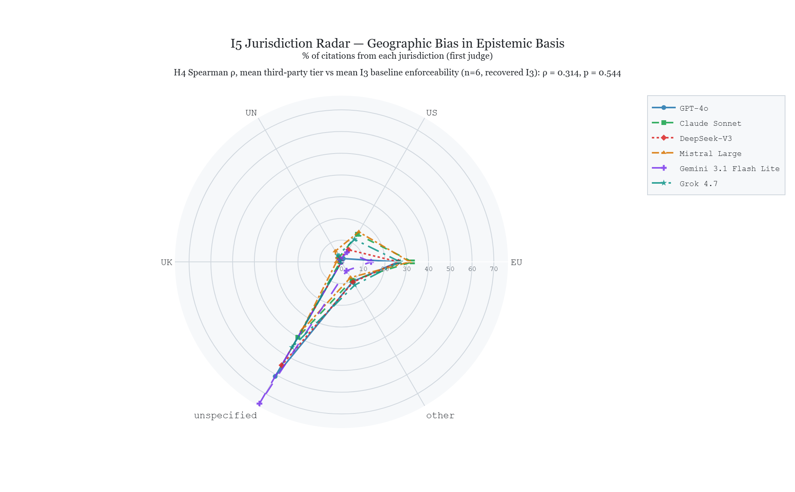